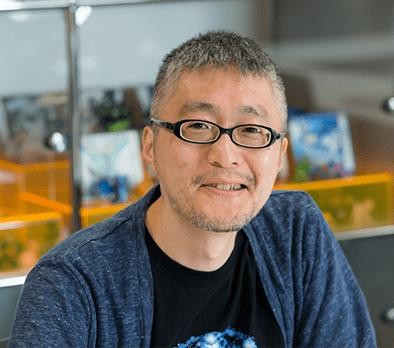
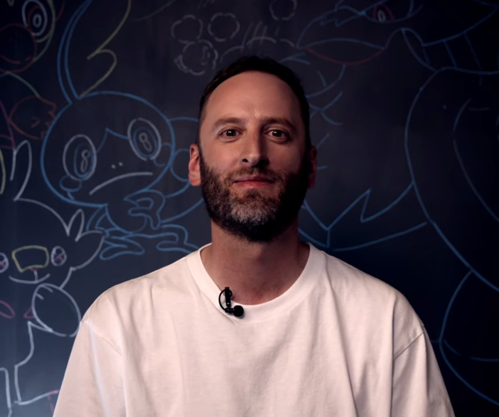
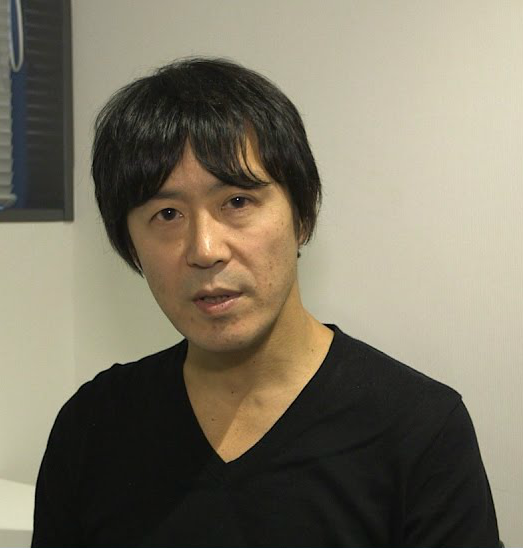

Pokémon cuenta con varios diseñadores que, como su nombre lo dice, se encargan de diseñar e ilustrar las especies que serán introducidas en nuevos juegos, en este apartado se verán algunos de los diseñadores más importantes
Nacido el 27 de enero de 1966) es un dibujante japonés, famoso por ser el director artístico de Pokémon. Es un amigo de Satoshi Tajiri, y es responsable de la mayor parte del arte Pokémon de entre las 251 primeras criaturas, habiéndolas diseñado casi todas con un estilo de trazo y forma simple, usando acuarelas para su coloreado. También es el responsable de haber creado a varios personajes principales en los videojuegos, como a Rojo, Azul y varios líderes de gimnasio. Algunos de sus diseños son Bulbasaur, Pichu y Combusken
es un diseñador gráfico británico que trabajó en Game Freak desde el año 2010 hasta el 2022 y que actualmente vive en Tokio, Japón. En los videojuegos de Pokémon destaca por el diseño de varios Pokémon de la quinta generación en adelante, así como en la animación de las escenas de vídeo. Es además el primer diseñador occidental oficial de Pokémon. En junio de 2022 dejó Game Freak para fundar su propio estudio de diseño de videojuegos, llamado All Possible Futures. Algunos de sus diseños son Vullaby, Trevenant y Poipole
es un programador y diseñador de videojuegos de Game Freak. También cumple con la función de asesor y diseñador de los Pokémon, fue el que tuvo una mayor participación en el diseño de Mew, además de que es su Pokémon favorito. Algunos de sus trabajos son Tauros, Dragonite y Mew